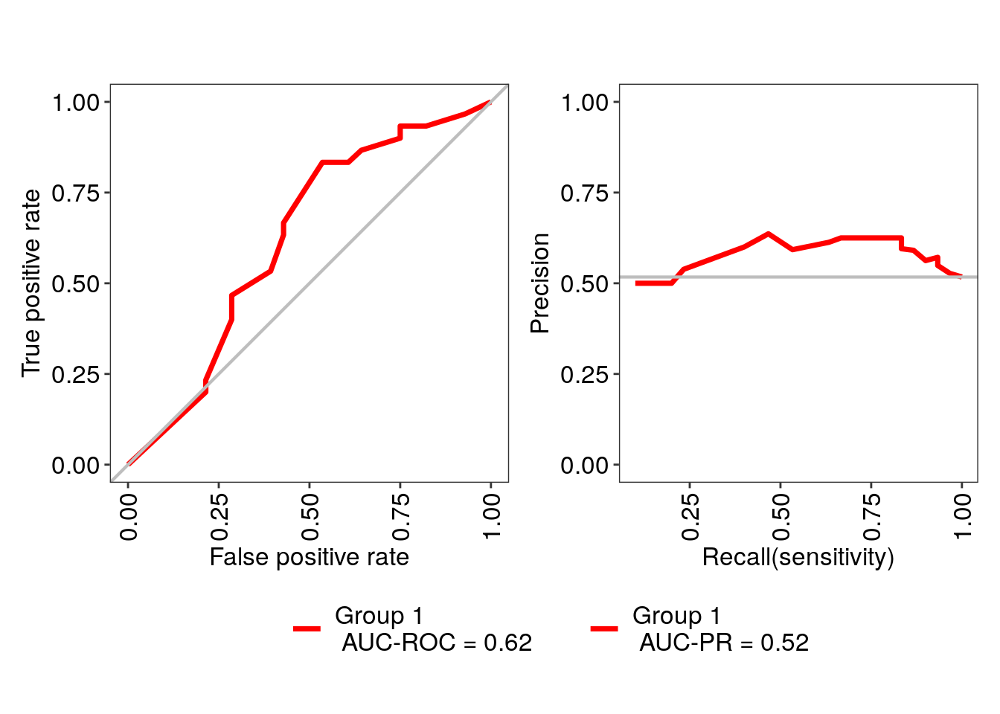

Chapter 12 Machine learning
Machine learning (ML) is a part of artificial intelligence. There are multiple definitions, but “machine” refers to computation and “learning” to improving performance based on the data by finding patterns from it. Machine learning includes wide variety of methods from simple statistical methods to more complex methods such as neural-networks.
Machine learning can be divided into supervised and unsupervised machine learning. Supervised ML is used to predict outcome based on the data. Unsupervised ML is used, for example, to reduce dimensionality (e.g. PCA) and to find clusters from the data (e.g., k-means clustering).
12.1 Supervised machine learning
“Supervised” means that the training data is introduced before. The training data contains labels (e.g., patient status), and the model is fitted based on the training data. After fitting, the model is utilized to predict labels of data whose labels are not known.
library(mia)
# Load experimental data
data(peerj13075, package="mia")
tse <- peerj13075Let’s first preprocess the data.
# Agglomerate data
tse <- agglomerateByRank(tse, rank = "order")
# Apply CLR transform
tse <- transformCounts(tse, assay.type = "counts", method = "clr",
MARGIN="samples", pseudocount=1)
# Get assay
assay <- assay(tse, "clr")
# Transpose assay
assay <- t(assay)
# Convert into data.frame
df <- as.data.frame(assay)
# Add labels to assay
labels <- colData(tse)$Diet
labels <- as.factor(labels)
df$diet <- labels
df[5, 5]## [1] -0.4612In the example below, we use mikropml package. We try to predict the diet type based on the data.
library(mikropml)
# Run random forest
results <- run_ml(df, "rf", outcome_colname = "diet",
kfold = 2, cv_times = 5, training_frac = 0.8)
# Print result
confusionMatrix(data = results$trained_model$finalModel$predicted,
reference = results$trained_model$finalModel$y)## Confusion Matrix and Statistics
##
## Reference
## Prediction Mixed Veg
## Mixed 12 10
## Veg 11 14
##
## Accuracy : 0.553
## 95% CI : (0.401, 0.698)
## No Information Rate : 0.511
## P-Value [Acc > NIR] : 0.331
##
## Kappa : 0.105
##
## Mcnemar's Test P-Value : 1.000
##
## Sensitivity : 0.522
## Specificity : 0.583
## Pos Pred Value : 0.545
## Neg Pred Value : 0.560
## Prevalence : 0.489
## Detection Rate : 0.255
## Detection Prevalence : 0.468
## Balanced Accuracy : 0.553
##
## 'Positive' Class : Mixed
## mikropml offers easier interface to caret package. However, we can also use it directly.
Let’s use xgboost model which is another commonly used algorithm in bioinformatics.
# Set seed for reproducibility
set.seed(6358)
# Specify train control
train_control <- trainControl(method = "cv", number = 5,
classProbs = TRUE,
savePredictions = "final",
allowParallel = TRUE)
# Specify hyperparameter tuning grid
tune_grid <- expand.grid(nrounds = c(50, 100, 200),
max_depth = c(6, 8, 10),
colsample_bytree = c(0.6, 0.8, 1),
eta = c(0.1, 0.3),
gamma = 0,
min_child_weight = c(3, 4, 5),
subsample = c(0.6, 0.8)
)
# Train the model, use LOOCV to evaluate performance
model <- train(x = assay,
y = labels,
method = "xgbTree",
objective = "binary:logistic",
trControl = train_control,
tuneGrid = tune_grid,
metric = "AUC",
verbosity = 0
)Let’s create ROC curve which is a commonly used method in binary classification. For unbalanced data, you might want to plot precision-recall curve.
library(MLeval)
# Calculate different evaluation metrics
res <- evalm(model, showplots = FALSE)
# Use patchwork to plot ROC and precision-recall curve side-by-side
library(patchwork)
res$roc + res$proc +
plot_layout(guides = "collect") & theme(legend.position = 'bottom')
12.2 Unsupervised machine learning
“Unsupervised” means that the labels (e.g., patient status is not known), and patterns are learned based only the abundance table, for instance. Unsupervised ML is also known as a data mining where patterns are extracted from big datasets.
For unsupervised machine learning, please refer to chapters that are listed below: